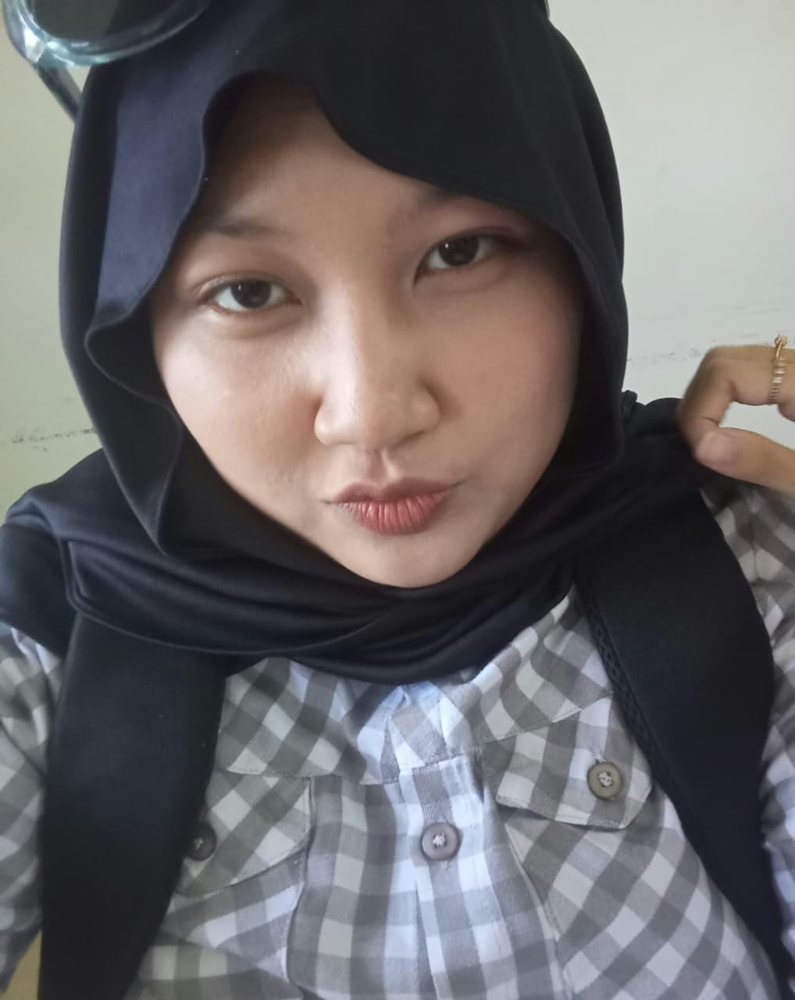
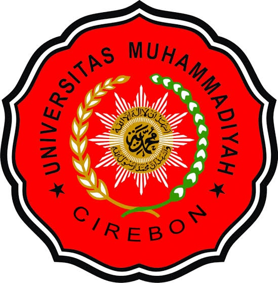
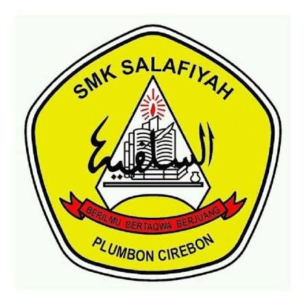
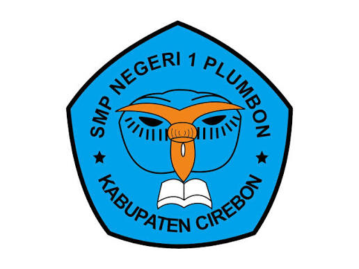

Portal Akademik Mahasiswa
Web AppAplikasi sistem informasi akademik berbasis web dengan fitur halaman login, daftar mata kuliah (Analisis & Desain PL, IMK), jadwal kuliah, dan tampilan responsif menggunakan Tailwind CSS.

Mahasiswa S1 Teknik Informatika • Universitas Muhammadiyah Cirebon
Halo! Saya Fatihatul Ikrimah, mahasiswa aktif Program Studi S1 Teknik Informatika di Universitas Muhammadiyah Cirebon (UMC). Saya memiliki minat besar dalam pengembangan perangkat lunak berbasis multi-platform (Web, Desktop, dan Mobile), perancangan antarmuka pengguna yang responsif, serta visualisasi grafis interaktif.
Saat ini saya sedang mendalami arsitektur aplikasi modern mulai dari front-end web responsif, pengembangan RESTful API, hingga pemrograman aplikasi desktop dan mobile native.

Mempelajari Pemrograman Berbasis Platform, Analisis & Desain Perangkat Lunak, Interaksi Manusia & Komputer, serta Grafika Komputer & AR/VR.

Mempelajari dasar-dasar teknologi informasi, logika pemrograman, aplikasi perkantoran, dan aktif dalam kegiatan pengembangan kompetensi kejuruan.

Menyelesaikan pendidikan menengah pertama dengan pengenalan awal komputer, literasi digital, dan kegiatan ekstrakurikuler sekolah.
Struktur semantik, Flexbox, CSS Grid, & Responsive Media Queries
ES6+, DOM Manipulation, Fetch API, & Node.js dasar
Pemrograman Berorientasi Objek (OOP) & GUI JavaFX
Android Jetpack Compose dasar & Visualisasi 3D Python
Aplikasi sistem informasi akademik berbasis web dengan fitur halaman login, daftar mata kuliah (Analisis & Desain PL, IMK), jadwal kuliah, dan tampilan responsif menggunakan Tailwind CSS.
Aplikasi web praktis untuk mencatat dan memantau tanggal kedaluwarsa bahan makanan maupun minuman anak kos guna meminimalkan pemborosan dan menjaga kualitas konsumsi.
Sistem pemantauan ancaman siber dan manajemen respons insiden keamanan (SOC) yang mencakup pelacakan tiket insiden, investigasi tingkat bahaya, analisis kerentanan divisi, serta autentikasi MFA.
Tertarik berdiskusi atau berkolaborasi dalam proyek pengembangan perangkat lunak? Silakan hubungi saya melalui: